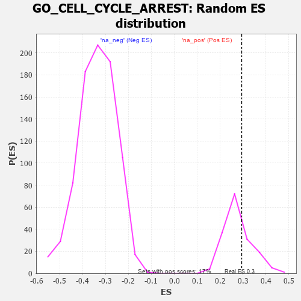

| | | Dataset | 7d |
| Phenotype | NoPhenotypeAvailable |
| Upregulated in class | na_pos |
| GeneSet | GO_CELL_CYCLE_ARREST |
| Enrichment Score (ES) | 0.2934219 |
| Normalized Enrichment Score (NES) | 1.0624753 |
| Nominal p-value | 0.3195266 |
| FDR q-value | 0.6675961 |
| FWER p-Value | 1.0 |
Table: GSEA Results Summary
 Fig 1: Enrichment plot: GO_CELL_CYCLE_ARREST
Fig 1: Enrichment plot: GO_CELL_CYCLE_ARREST
Profile of the Running ES Score & Positions of GeneSet Members on the Rank Ordered List
| PROBE | GENE SYMBOL | GENE_TITLE | RANK IN GENE LIST | RANK METRIC SCORE | RUNNING ES | CORE ENRICHMENT | | 1 | PCBP4 | | | 44 | 2.875 | 0.1014 | Yes |
| 2 | INSM1 | | | 250 | 0.939 | 0.1104 | Yes |
| 3 | CNOT7 | | | 348 | 0.750 | 0.1261 | Yes |
| 4 | BAX | | | 387 | 0.711 | 0.1477 | Yes |
| 5 | RRP8 | | | 403 | 0.699 | 0.1718 | Yes |
| 6 | NBN | | | 405 | 0.696 | 0.1976 | Yes |
| 7 | CNOT6 | | | 462 | 0.655 | 0.2149 | Yes |
| 8 | CNOT2 | | | 514 | 0.625 | 0.2317 | Yes |
| 9 | CCNB1 | | | 581 | 0.601 | 0.2457 | Yes |
| 10 | RBL2 | | | 593 | 0.596 | 0.2665 | Yes |
| 11 | CDK7 | | | 686 | 0.564 | 0.2759 | Yes |
| 12 | VASH1 | | | 712 | 0.556 | 0.2934 | Yes |
| 13 | WDR6 | | | 916 | 0.504 | 0.2865 | No |
| 14 | TFDP1 | | | 1180 | 0.450 | 0.2700 | No |
| 15 | CNOT3 | | | 1274 | 0.435 | 0.2745 | No |
| 16 | CARM1 | | | 1413 | 0.408 | 0.2722 | No |
| 17 | E2F4 | | | 1501 | 0.390 | 0.2757 | No |
| 18 | SDE2 | | | 1579 | 0.378 | 0.2801 | No |
| 19 | CDK4 | | | 1626 | 0.370 | 0.2880 | No |
| 20 | KMT2E | | | 1730 | 0.350 | 0.2880 | No |
| 21 | MSH2 | | | 1819 | 0.334 | 0.2893 | No |
| 22 | FOXO4 | | | 2004 | 0.304 | 0.2774 | No |
| 23 | CNOT4 | | | 2161 | 0.283 | 0.2682 | No |
| 24 | CDK2 | | | 2226 | 0.272 | 0.2702 | No |
| 25 | MED25 | | | 2320 | 0.257 | 0.2680 | No |
| 26 | MIF | | | 2357 | 0.252 | 0.2729 | No |
| 27 | KAT2B | | | 2502 | 0.226 | 0.2631 | No |
| 28 | ERN2 | | | 3160 | 0.129 | 0.1849 | No |
| 29 | SMAD3 | | | 3303 | 0.105 | 0.1708 | No |
| 30 | GAS2 | | | 3392 | 0.090 | 0.1631 | No |
| 31 | CNOT1 | | | 3473 | 0.081 | 0.1560 | No |
| 32 | CDK5 | | | 3480 | 0.080 | 0.1582 | No |
| 33 | PPM1A | | | 3953 | 0.002 | 0.0986 | No |
| 34 | MCPH1 | | | 4039 | -0.014 | 0.0884 | No |
| 35 | MTOR | | | 4114 | -0.025 | 0.0800 | No |
| 36 | ABL1 | | | 4125 | -0.027 | 0.0797 | No |
| 37 | RRAGD | | | 4183 | -0.039 | 0.0740 | No |
| 38 | RRAGA | | | 4223 | -0.046 | 0.0707 | No |
| 39 | RPTOR | | | 4252 | -0.050 | 0.0691 | No |
| 40 | ILK | | | 4510 | -0.096 | 0.0402 | No |
| 41 | APC | | | 4558 | -0.107 | 0.0382 | No |
| 42 | EP300 | | | 4941 | -0.186 | -0.0031 | No |
| 43 | ING4 | | | 5084 | -0.221 | -0.0128 | No |
| 44 | ATM | | | 5210 | -0.249 | -0.0194 | No |
| 45 | CDK1 | | | 5264 | -0.262 | -0.0163 | No |
| 46 | MAGI2 | | | 5295 | -0.269 | -0.0101 | No |
| 47 | STK11 | | | 5922 | -0.443 | -0.0727 | No |
| 48 | SGSM3 | | | 5957 | -0.457 | -0.0600 | No |
| 49 | JMY | | | 6023 | -0.479 | -0.0504 | No |
| 50 | CALR | | | 6077 | -0.499 | -0.0385 | No |
| 51 | TFAP4 | | | 6254 | -0.556 | -0.0401 | No |
| 52 | SOX2 | | | 6477 | -0.652 | -0.0439 | No |
| 53 | CDK9 | | | 7266 | -1.138 | -0.1011 | No |
| 54 | CASP2 | | | 7442 | -1.322 | -0.0740 | No |
| 55 | PKD1 | | | 7628 | -1.611 | -0.0374 | No |
| 56 | PKD2 | | | 7822 | -2.167 | 0.0188 | No |
Table: GSEA details [plain text format]

Fig 2: GO_CELL_CYCLE_ARREST: Random ES distribution
Gene set null distribution of ES for GO_CELL_CYCLE_ARREST